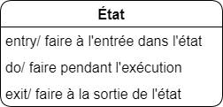
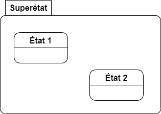
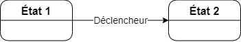
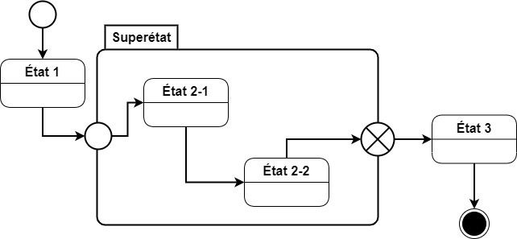

Normes du diagramme d'états-transitions
Étape de la conception
Analyse et conception
Standard de notation
UML 2.5
Nom anglais
State diagram
Les modèles présentés aux précédentes sections décrivent la structure des classes, mais n'apportent pas de précisions sur les comportements de ces dernières. En UML, il est possible de modéliser les comportements de quatre façons :
- Diagramme d'états d'objets;
- Diagrammes d'états-transitions de cas d'utilisation;
- Diagrammes de séquence système;
- Diagrammes d'activité (diagramme de séquence ou de collaboration).
Dans ce guide, seuls les diagrammes d'états-transitions d'objet, qui seront simplement appelés diagramme d'états-transitions (DET), sont présentés. Les DET permettent de présenter les différents états dans lesquels un objet peut se retrouver ainsi que les changements qui peuvent être apportés sur cet objet afin qu'il passe d'un état à un autre.
Les états de comportement
Les états simples sont notés par une boîte arrondie. Le nom de l'état apparaît en gras dans la boîte. Le nom de l'état est un descriptif (idéalement d'un seul mot) qui indique l'état de l'objet. De règle générale, les états seront nommés selon des adjectifs ou des expressions descriptives tels « actif », « innactif », « en attente », « validé ».
On peut aussi ajouter une boîte d'action en dessous du nom de l'état pour indiquer des actions à prendre dans le système lorsque l'objet entre, qu'il demeure ou qu'il sort de l'état. On indique les conditions d'exécution de l'action suivies d'une barre oblique et de la description de l'action. Les trois mots-clés suivants sont employés pour désigner les conditions d'exécution :
- entry : action exécutée lorsque l'objet entre dans l'état;
- do : action exécutée tant que l'objet demeure dans l'état;
- exit action exécutée lorsque l'objet sort de l'état.
Si un état n'a pas d'action, alors il s'agit d'un état simple. Il est possible de répéter une condition d'exécution s'il y a plusieurs actions à faire dans une même condition d'exécution (par exemple, s'il y a deux traitements à faire à l'entrée, on indique deux lignes entry).

Les superétats
Il arrive que certains états puissent partager des caractéristiques ou décomposer un traitement en plusieurs sous-traitements. Prenons l'exemple d'une validation à plusieurs étapes. Il est intéressant alors de regrouper plusieurs états dans un même état appelé superétat.
Un superétat est représenté par une boîte semblable à celle d'un état avec des actions, mais contient d'autres états et des transitions au lieu de contenir des actions. Le nom de l'état sera affiché dans une étiquette rectangulaire située en haut à gauche de la boîte. Pour entrer ou sortir d'un superétat, il faut utiliser les états spéciaux des superétats.

Notation alternative
Il est possible de noter les états de comportement avec la notation d'une boîte surmontée d'une étiquette (comme pour les superétats). De même, il est possible de noter les superétats avec une simple boîte et un séparateur comme pour les états.
Les transitions
Les transitions représentent la possibilité de passer d'un état à un autre. Ils sont représentés par une flèche débutant à un état et se terminant à un autre état. Un texte apparaît toujours sur la flèche indiquant l'élément qui déclenche la transition.

Conditions de garde et actions de transition
Il est aussi possible d'ajouter une condition de garde pour préciser une condition nécessaire à la réalisation de la transition. Une condition de garde est indiquée entre crochets. Une action peut aussi être effectuée pendant la transition. Si c'est le cas, elle est notée après une barre oblique « / ». L'ordre d'apparition des thèmes est toujours le suivant :
-
Représentation des conditions de garde dans un DET
-
Représentation des actions de transition dans un DET
Important
À la sortie d'un état, les conditions doivent être exclusives. C'est-à-dire que pour chaque scénario d'exécution, un seul chemin est disponible. Par exemple les conditions \([x > 10]\) et \([x > 15]\) ne sont pas exclusives, car 20 les satisfait toutes les deux. Par contre, \([10 < x \leq 15]\) et \([x > 15]\) sont des conditions exclusives.
Également,il doit toujours y avoir une transition valide pour quitter un état. Les états spéciaux détruire ou final font exceptions à cette règle.
Les états spéciaux
Les états spéciaux permettent de représenter graphiquement certains états communs à un grand nombre de diagrammes d'états-transitions. Il existe plus d'états spéciaux que présentés ici.
États dans la vie de l'objet
Trois états spéciaux servent à décrire la vie d'un objet :
- L'état
initialest le premier état visité dans un DET. Il indique où commencer à lire le diagramme et représente généralement l'activation ou la création de l'objet. Il est représenté par un cercle vide. - L'état
détruireest le dernier état visité dans un DET. Il indique la destruction de l'objet, et donc, la fin de son comportement. Il est représenté par une croix. - L'état
finalest le dernier état visité dans un DET. Il indique la fin du processus modélisé. À la différence de l'étatdétruire, il n'indique pas la destruction de la ressource (ni même sa désactivation), mais simplement la fin du processus. Il est représenté par un cercle plein inscrit dans un plus grand cercle vide.
-
Représentation de l'état spécial
initialdans un DET
-
Représentation de l'état spécial
détruiredans un DET
-
Représentation de l'état spécial
finaldans un DET
États de liaisons entre des superétats
Sauf exception, il n'existe qu'un point d'entrée dans un superétat. Cela n'exclut pas que plusieurs transitions puissent mener à ce point d'entrée, mais le superétat encapsule ses états internes, donc contrôle le chemin d'accès. Il en va de même pour la sortie du super état. On utilise donc deux états spéciaux pour représenter l'entrée et la sortie d'un superétat.
Chacun de ces états est représenté par un symbole placé à la limite du superétat. Une ou plusieurs transitions peuvent provenir ou terminer à ces états spéciaux. Tous les transitions entrantes ou sortantes du super devraient passer par des états spéciaux. Le point d'entrée dans un superétat est représenté par un cercle vide, tandis que le point de sortie d'un superétat est représentée par une croix dans un cercle.
-
Représentation de l'état spécial
point d'entréedans un superétat de DET
-
Représentation de l'état spécial
point de sortiedans un superétat de DET

 Documentation
Documentation